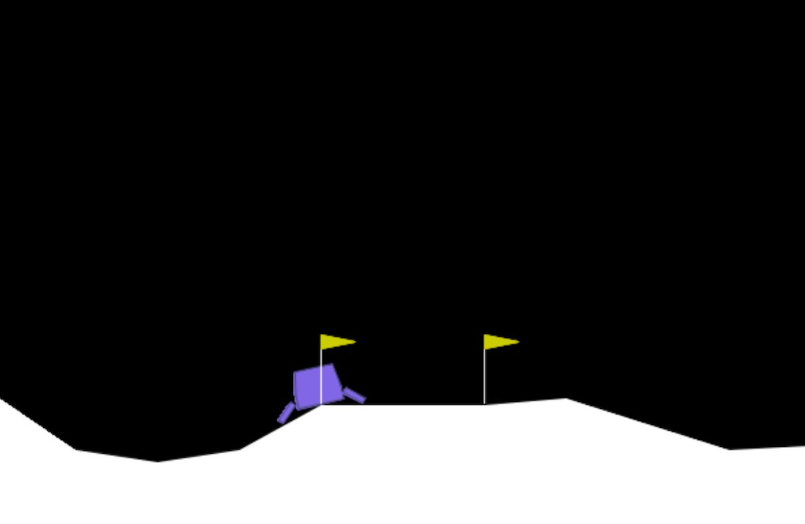

Policy Learning (PL) with GP
This tutorial is based on examples/policy_learning/test_tgp_pl.py, examples/policy_learning/test_cgp_pl.py, examples/policy_learning/test_lgp_pl.py, and examples/policy_learning/test_ge_pl.py and demonstrates how to evolve a policy for the Gymnasium Lunar Lander environment using Tree-based Genetic Programming (TGP), Cartesian Genetic Programming (CGP), Linear Genetic Programming (LGP), or Grammatical Evolution (GE).
1. Imports
First, set up the necessary imports. tiny_[tgp|cgp|lgp|ge] is the module for either TGP, CGP, LGP, or GE, respectively. problem is required to formulate the problem, a collection of commonly used functions are implemented in functions, and tinyverse contains a collection of base classes for the GP modules. Methods that are required to set up the Lunar Lander environment are provided by gymnasium.
2. Set up the Lunar Lander environment
3. Choose the function and terminal set
Functions are implemented in src/gp/functions.py. For the terminals, use the Var class for variables and Const class for constants.
GE: Functions, arguments and grammar
GE uses a function set but no terminal set. Instead, arguments and the grammar need to be set:
functions = [ADD, SUB, MUL, DIV, lAND, lOR, lNAND, lNOR, lNOT, IF, LT, GT]
arguments = ["a", "b", "c", "d", "e", "f", "g", "h"] # Inputs for the functions
grammar = {
"<expr>": ["[<lfun>, <lfun>, <lfun>, <lfun>]"],
"<lfun>": ["LT(<cvar>, <cvar>)", "GT(<cvar>, <cvar>)"],
"<logic>": ["AND", "OR", "NAND", "NOR", "NOT"],
"<fun>": ["ADD(<fun>, <fun>)", "SUB(<fun>, <fun>)", "MUL(<fun>, <fun>)", "DIV(<fun>, <fun>)", "<lfun>", "<cvar>"],
"<cvar>": ["<var>"],# ["<const>", "<var>"],
"<const>" : ["1", "2", "0.5", str(pi), str(sqrt(2))],
"<var>" : arguments
}
4. Configure the run and model
config = GPConfig(
num_jobs=1,
max_generations=50,
stopping_criteria=300,
minimizing_fitness=False,
ideal_fitness=300,
silent_algorithm=False,
silent_evolver=False,
minimalistic_output=True,
num_outputs=4,
report_interval=1,
max_time=500,
global_seed=42,
checkpoint_interval=100,
checkpoint_dir='examples/checkpoint',
experiment_name='pl_tgp'
)
config = CGPConfig(
num_jobs=1,
max_generations=50,
stopping_criteria=100,
minimizing_fitness=False,
ideal_fitness=100,
silent_algorithm=False,
silent_evolver=False,
minimalistic_output=True,
num_functions=len(functions),
max_arity=3,
num_inputs=wrapped_env.observation_space.shape[0],
num_outputs=4,
report_interval=1,
max_time=500,
global_seed=42,
checkpoint_interval=10,
checkpoint_dir='checkpoint',
experiment_name='pl_cgp'
)
config = LGPConfig(
num_jobs=1,
max_generations=1000,
stopping_criteria=100,
minimizing_fitness=False,
ideal_fitness=100,
silent_algorithm=False,
silent_evolver=False,
minimalistic_output=True,
report_interval=5,
max_time=1200,
num_outputs=4,
num_registers=5,
global_seed=None,
checkpoint_interval=100000,
checkpoint_dir="checkpoints",
experiment_name="pl_lgp",
)
config = GPConfig(
num_jobs=1,
max_generations=50,
stopping_criteria=300,
minimizing_fitness=False,
ideal_fitness=300,
silent_algorithm=False,
silent_evolver=False,
minimalistic_output=True,
num_outputs=4,
report_interval=1,
max_time=5000,
global_seed=42,
checkpoint_interval=10,
checkpoint_dir='examples/checkpoint',
experiment_name='pl_ge'
)
5. Set the hyperparameters
hyperparameters = LGPHyperparameters(
mu=500,
macro_variation_rate=0.75,
micro_variation_rate=0.25,
insertion_rate=0.5,
max_segment=10,
reproduction_rate=0.5,
branch_probability=0.05,
p_register = 0.15,
max_len = 100,
initial_max_len = 30,
erc = False,
default_value = 0.0,
protection = 1e10
)
6. Evolve the policy
Configure the problem using the PolicySearch class, evolve the policy using the chosen model, and finally, evaluate the evolved policy.
problem = PolicySearch(env=env, ideal_=300, minimizing_=False)
tgp = TinyTGP(functions, terminals, config, hyperparameters)
policy = tgp.evolve(problem)
env = gym.make("LunarLander-v3", render_mode="human")
problem = PolicySearch(env=env, ideal_=100, minimizing_=False)
problem.evaluate(policy.genome, tgp, num_episodes=1, wait_key=True)
problem = PolicySearch(env=env, ideal_=100, minimizing_=False)
cgp = TinyCGP(functions, terminals, config, hyperparameters)
policy = cgp.evolve(problem)
env.close()
env = gym.make("LunarLander-v3", render_mode="human")
problem = PolicySearch(env=env, ideal_=100, minimizing_=False)
problem.evaluate(policy.genome, cgp, num_episodes=1, wait_key=True)
env.close()
problem = PolicySearch(env=env, ideal_=300, minimizing_=False)
lgp = TinyLGP(functions, terminals, config, hyperparameters)
policy = lgp.evolve(problem)
env = gym.make("LunarLander-v3", render_mode="human")
problem = PolicySearch(env=env, ideal_=100, minimizing_=False)
problem.evaluate(policy.genome, lgp, num_episodes=1, wait_key=True)
problem = PolicySearch(env=env, ideal_=300, minimizing_=False)
ge = TinyGE(functions, grammar, arguments, config, hyperparameters)
policy = ge.evolve(problem)
env = gym.make("LunarLander-v3", render_mode="human")
problem = PolicySearch(env=env, ideal_=100, minimizing_=False)
problem.evaluate(policy.genome, ge, num_episodes=1, wait_key=True)
Run the experiment
Name your file (for example, test_cgp_pl.py) and run the experiment.
If silent_algorithm and silent_evolver are set to False, the output should look similar to this:
...
Generation #6 - Best Fitness: -114.62394258894938
Generation #7 - Best Fitness: -114.62394258894938
Stop condition has been triggered
297;-114.62394258894938
Press Enter to continue...
For each generation, the fitness of the best individual is printed. At the end of the run, the number of evaluations and the best fitness of the run are reported.
Additionally, an instance of the Lunar Lander trying to land according to the evolved policy is shown:

Note
Output may vary depending on whether an individual with ideal fitness was found, whether the maximum number of generations was reached, whether the time limit has been exceeded, and the configuration of silent_algorithm, silent_evolver, and minimalistic_output.